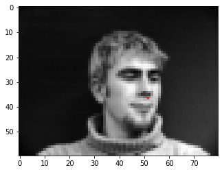
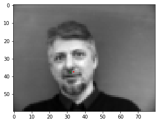
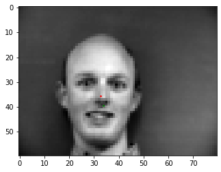
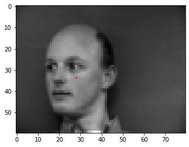
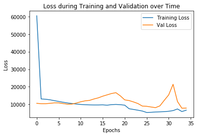
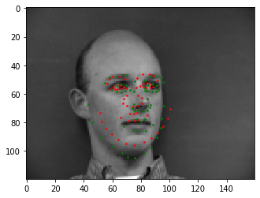
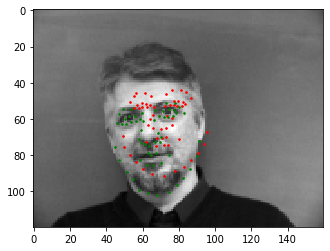
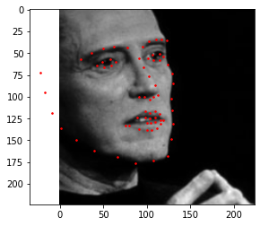
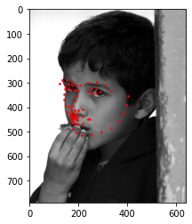
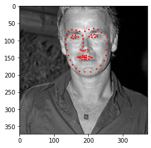

In this part, we had to detect the nose keypoint. Here are some of the ground truth keypoints:



For the model, I used a learning rate of 1e-3, batch size of 1, 20 input channels, a kernel size of 3 and 15 epochs for training and validation.





It fails for the images where the face is angled. This may be due to the limited amount of training data, due to which the model is unable to handle outlier cases where the head is angled in an unexpected way

Now, we try to predict all the facial keypoints. Here are the ground truth labels:


For the model, I used a learning rate of 1e-3, 25 epochs, 15 input channels with a kernel size of 3x3 and batch size of 1. I used 5 Conv2d layers, each followed by a ReLU and pooling layer, and then 3 Fully Connected Layers.





The predicted points are fairly similar across faces, due to which some faces work pretty well and others do not. This is because the model is overfit to the training data and is too rigid and can be rectified by increasing the amount of training data the model has available.
Now we try to predict the keypoints using a much larger training set and the ResNet18 model that comes preloaded into PyTorch. Here are some of the ground truth labels.



For this model, I used a kernel size of 7x7, 30 epochs of training and 1 input channel.
Here are some of the resulting predictions:

